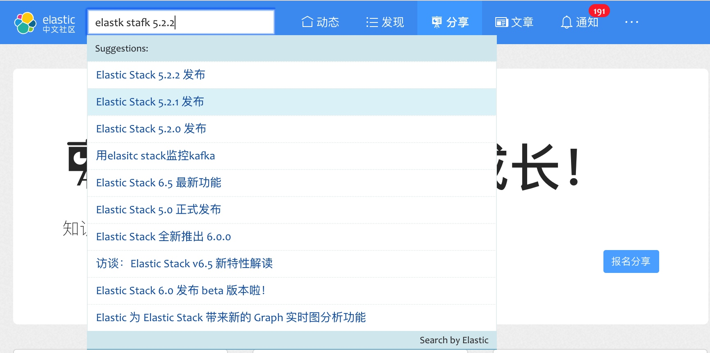

模糊查询
问题又来了，我们在实际的网站访问情况下，发现用户经常出现拼写错误，假如应该正确的关键字是 elastic ，但是总会有些人会拼写成 elastik、elasic 或是 eastic 等等，结果就找不到任何结果。
这个问题我们在 Elasticsearch 解决的办法也是有很多的，我们分别来看一下。
首先我们来看一下，Elasticsearch 底层是如何处理这种输入错误的，假如我们索引里面有的词语是 elastic，而用户输入的是 elastik，我们用肉眼其实一眼就能看出来，这两个词语其实只有一个字母对不上，因为 Elasticsearch 底层是基于倒排索引来进行匹配的，而倒排索引的主要部分就是一个一个的 倒排词语（Term），在索引里面我们有一个 Term 词典方便我们来快速检测某个 Term 在不在索引里面。
字符相似
虽然我们 Term 词典里面没有 elastik，但是却有 elastic 啊，所以，这里就要看如何计算这俩字符的相似度了，这里有一个编辑距离的概念（Lucene 里面使用的是莱文斯坦距离，Levenshtein edit distance），指的是给定两个不同的字符串，把一个字符串转换成另外一个所需的最少的编辑操作次数。如果查询的 Term 和索引的 Term 在编辑 N 个词之后能够匹配得上，那么我们认为这样也算是满足（容忍）匹配的需求。而这个编辑距离也就是控制我们模糊匹配的范围。elastic 将末尾 c 编辑为 k 即可匹配上 elastik，该 Term 所对应的文档即可返回，这里的编辑距离 N 也就是 1。
我们看看这里的几个字符串之间通过编辑转换的例子:
elastix=>elastic， 编辑距离1，替换x 为 celasti=>elastic，编辑距离1，末尾插入字符celasticd=>elastic，编辑距离1，删除字符d
看来，通过简单的插入、修改和删除，我们可以将一个字符转换为另外一个字符，他们还是比较相似的嘛。
小知识
Lucene 底层使用 FST（Finite State Transducer）作为数据结构来保存 Term 词典。FST 是一个有向无环图，相比其他数据结构更节省内存，这样可以把 Term 词典完全加载到内存，方便快速定位 Term。
这里有一篇关于 FST 不错的介绍：http://www.cnblogs.com/LBSer/p/4119841.html
有关莱文斯坦距离：https://baike.baidu.com/item/%E8%8E%B1%E6%96%87%E6%96%AF%E5%9D%A6%E8%B7%9D%E7%A6%BB
查询的 fuzziness 参数
在 Elasticsearch 里面，对字符类型的字段使用全文查询时，如 Match Query，可以通过设置 fuzziness 参数来控制查询的模糊匹配的程度。fuzziness 参数可以设置为：
- 0, 1, 2， 可以设置为具体的编辑距离，最大为２。
- AUTO，自动模式，基于词语的长度来自动选择编辑距离，还支持可选的格式
AUTO:[low],[high]来设置一个字符的距离规则范围，如果不指定参数 low 和 high，默认是3和6，也就是AUTO:3,6， 对于不同的字符串，则会有这样的编辑距离规则： - 0..2，对于长度小于2的字串，必须绝对匹配
- 3..5，对于长度范围3到5的字串，允许一个编辑距离
- >5，对于长度大于5的字串，允许两个编辑距离
AUTO 模式能够自动根据字符串的长度进行选择，我们应该优先使用 AUTO 模式。
举例如下：
DELETE test
POST test/doc/1
{
"doc":"elastic"
}
POST test/doc/2
{
"doc":"elastik"
}
GET test/_search
{
"query": {
"match": {
"doc":{
"query": "elastix",
"fuzziness": "AUTO"
}
}
}
}
注意啦，不是所有的查询都支持 fuzziness 参数的。除了 Match Query，还有 QueryString Query 和 Simple Query String Query 也支持。他们的参数也各不相同，所以在使用的时候，还请查询官方的 API 手册。
小测试
- 为什么编辑距离没有超过2的？编辑距离是越大越好么？
fuzziness也可以设置成数字，如果设置成超过10是什么效果？elast ic是否能够匹配结果？那e lastic呢？
另外，fuzzy 还支持是否运行将字符的位置变换作为一次编辑，在 Match Query 里面默认是启用的，如下：elastic -> elsatic，假如我们不希望位置变换，我们可以设置参数 fuzzy_transpositions 为 false，如下：
GET test/_search
{
"query": {
"match": {
"doc":{
"query": " elsatic",
"fuzziness": "1",
"fuzzy_transpositions":false
}
}
}
}
另外，我们还能通过参数 prefix_length 来控制两个字符串匹配的最小相同的前缀大小，如 elastic 和 elsatic，如果 prefix_length 参数为 3 则会匹配失败。该参数默认是 0。
因为，fuzzy 查询会将查询尝试变换成其他的条件，所以会把一个条件 expand 成很多条件，我们可以通过参数来 max_expansions 来进行限制，默认值是 50。
为了避免产生太多的模糊词语和节省查询开销，我们将 prefix_length 设置成 2，以及将max_expansions设置成 10 来进行优化。
Fuzzy Query
Elasticsearch 还提供了一个独立的 Fuzzy Query，不过参数有一些变化，使用 transpositions 来控制是否开启位置变换，且默认是禁止的，同样支持 fuzziness、prefix_length 和 max_expansions。示例如下：
GET test/_search
{
"query": {
"fuzzy": {
"doc":{
"value": " elsatic",
"fuzziness": "AUTO",
"transpositions":true
}
}
}
}
注意此处的例子里面，条件 elsatic的第一个字符是空格，如果再加一个空格就会查不到数据，为什么呢？
因为，相比在 Match 里面使用 fuzziness 参数来支持模糊查询，Fuzzy Query 参数里面传递的 value 条件将作为一个 Term 整体，也就是不会进行任何的文本分析处理，空格的移除也会变成一次编辑，在这里的 AUTO 模式会允许两次编辑，但是我们需要移除两次空格和一次位置变换，也就是3，自然查询不到索引里面的 elastic 啦。
Wildcard 查询
大家是否还记得在使用 Access 或是其它系统的时候，有一种处理模糊条件的办法，就是用 ? 代替不知道的单个字符，用 * 代表任意多个字符。对了，我们一般叫这种查询为通配符查询。
如 elasti? 可以匹配上 elastic 以及 elas* 同样可以匹配上 elastic。
示例如下：
GET test/_search
{
"query": {
"wildcard": {
"doc": {
"value": "elasti?"
}
}
}
}
上面的查询会同时匹配上索引里面的 elstic 和 elstik。
Wildcard 在使用的时候一定要特别小心，因为它的性能比较差，尤其是不要让用户在输入的条件里面，第一个字符就以通配符（如：*lasi）来开头，因为 wildcard 要遍历所有可能的 Term 词典，范围越大，代价越大。
作为一个搜索框，如果也能够支持支持通配符搜索给用户，当然是大大的方便了用户啊。加上加上。
Regex 查询
既然通配符搜索都有了，那么还有一种非常常见的正则匹配能不能也加上呢？
答案是可以的！
Elasticsearch 同样支持使用正则表达式来构建查询，正则表达式功能非常丰富，比通配符要强大的多，这里就不展开说明了，这里有详细的文档：
https://www.elastic.co/guide/en/elasticsearch/reference/current/query-dsl-regexp-query.html
值得一提的是，Elasticsearch 支持的正则表达式不是和 Perl 语法的正则表达式兼容的，只是一部分子集，另外，正则表达式查询和通配符查询都是对分词之后的倒排索引的 Term 进行的匹配，不是原始的字符串，这一点一定要弄清楚了。如 elas.* 可以匹配上 elastic，示例如下：
GET test/_search
{
"query": {
"regexp": {
"doc":{
"value": "elas.*"
}
}
}
}
注意，正则表达式虽然威力强大，但是用的不好也会造成很大的性能问题。条件越具体越精确越好，避免歧义，尽量确保正则表达式左端前缀匹配的足够长，且不要以通配符开头。
Query String 查询
原来实现模糊匹配的方法有这么多，如果要都支持这些查询，我们是不是要分别构建3个查询，放到 bool 查询里面，然后分别设置权重呢？
答案当然可以，不过有点麻烦，那有没有简单点的办法呢，答案当然是可以哈。
Elasticsearch 的 Query String Query 就是这样的一个查询，它支持对查询条件进行解析，从而自动进行查询的改写，通配符查询、正则表达式查询都支持，选择字段，设置权重，甚至还有范围查询、多字段查询、短语查询等等。
我们看一个使用正则表达式的例子：
GET test/_search
{
"query": {
"query_string": {
"query": "/elasti[ck]+/"
}
}
}
注意，如果是正则表达式，请使用 / 作为开头和结尾。
然后再看看通配符的查询，如下：
GET test/_search
{
"query": {
"query_string": {
"query": "elasti*",
"allow_leading_wildcard": false
}
}
}
查询一切正常，我们还通过设置 allow_leading_wildcard 为 false 来禁止用户在查询条件开头输入通配符，保证查询性能。
这样，我们就不用担心用户输入正则表达式和通配符没有结果的问题了，我们可以在用户输入框的地方，给一下提示说明或者帮助文字，这些算是额外支持的高级用法。
Query String String 也支持 Fuzzy 参数，示例如下：
GET test/_search
{
"query": {
"query_string": {
"default_field": "doc",
"query": " elasti~",
"fuzziness": "AUTO",
"fuzzy_prefix_length": 2,
"fuzzy_max_expansions": 20,
"fuzzy_transpositions":true
}
}
}
细心的你会发现，这里的条件后面带上了一个波浪符号 ~，是的，这个是一个特点的语法，其实是 Lucene 的查询语法，因为要在一个输入框里面支持这么多的查询类型，所以需要一些特定的语法规则。
完整的文档在这里可以找到：
https://www.elastic.co/guide/en/elasticsearch/reference/6.6/query-dsl-query-string-query.html
功能集成
了解了这么多进行模糊匹配的黑科技，我们来看看如何和我们的搜索模板进行集成吧。
奇怪的查询
你也许会想到，我们直接把搜索模板里面的 Match 查询直接换成 QueryString 查询不就行了么？
并将查询变量 {{query}} 改成 {{query}}~，
真的么？我们看一下下面的这个查询：
POST test/doc/5
{
"doc":"社区福利"
}
GET test/_search
{
"query": {
"query_string": {
"default_field": "doc",
"query": " 社区福利~",
"fuzziness": "AUTO",
"fuzzy_prefix_length": 2,
"fuzzy_max_expansions": 20,
"fuzzy_transpositions":true
}
}
}
奇怪，为什么查不到呢？但是去掉波浪号就能查到！
这是因为加上波浪号，自动转成了 Fuzzy Query，并且波浪号相连的字符串 社区福里 变成了一个整体条件，不会再进行文本分析，如果你的查询条件是英文倒是没问题，但是如果是中文就会有问题，也就是中文字符串会拆分成单个词（Elasitcsearch 默认的分词是 Standard Analyzer，还记得吧），比如这个条件 社区福里，但是注意索引内的数据其实是 社、区、福、利，所以上面的查询就会匹配不上。
可以发现，中文字符串和英文字符串在 Elasticsearch 里面的很多地方，其表现行为是不一样的，所以我们在自己的业务系统中，一定要反复测试。
可以看到，本来普通的 Match Query 通过全文匹配能查到结果，加上模糊规则之后反而差不多了，这个可不秒。
并且，我们用户输入的查询是没有波浪符号的，也就是用 Query String 查询是不会自动的启用模糊匹配的。所以，我们还是需要单独加一个 Fuzzy Query 查询给我们的搜索模板，另外 Fuzzy Query 是进行的整个查询条件的匹配，我们可能需要对条件进行分词，所以，我们还是需要使用 Match Query。
我们更新我们的索引模板，将之前的 Match Query 加上 fuzziness 相关参数从而支持 Fuzzy 模糊匹配，然后再加上一个 Query String 查询，具备支持通配符和多种查询语法的能力，最终的修改语句如下：
另外，我们给 Query String 加上一个 {{field}}.keyword 字段，这样当用户进行通配符和正则匹配的时候，可以尝试对原始字符串进行模糊匹配。
POST _scripts/forum_search_template_v1
{
"script": {
"lang": "mustache",
"source": {
"size": "{{size}}",
"query": {
"bool": {
"must": [],
"should": [
{
"prefix": {
"{{field}}.keyword": {
"value": "{{query}}",
"boost": 10
}
}
},
{
"match_phrase_prefix": {
"{{field}}": {
"query": "{{query}}",
"boost": 2
}
}
},
{
"match": {
"{{field}}": {
"query": "{{query}}",
"fuzziness": "AUTO",
"max_expansions": 10,
"prefix_length": 2,
"fuzzy_transpositions": true
}
}
},
{
"query_string": {
"default_field": "{{field}},{{field}}.keyword",
"query": "{{query}}",
"fuzziness": "AUTO",
"fuzzy_prefix_length": 2,
"fuzzy_max_expansions": 10,
"fuzzy_transpositions": true,
"allow_leading_wildcard": false
}
}
]
}
},
"_source": [
"title",
"id",
"uid",
"views"
]
}
}
}
我们测试一下查询结果：
GET forum-mysql/_search/template
{
"id": "forum_search_template_v1",
"params": {
"field": "title",
"query": "elastk stafk 5.2.2",
"size": 10
}
}
结果分别是：
- Elastic Stack 5.2.2 发布
- Elastic Stack 5.2.0 发布
- Elastic Stack 5.2.1 发布
- ...
好了，现在总算是完美的解决了输错字的模糊匹配问题。同时对线上的搜索模板进行更新，那我们社区网站上的搜索框也就立即具有了新的搜索能力了。
效果如下：
